Research and Independent Projects
Outside of my research, I've invested time tinkering with optics, electronics, fabrication, and various other projects. This page is a collection of a few things I've been working on.
Free-Space Optical Testbed
As part of my NASA EPSCoR-funded work at Montana State University, I am designing and constructing a free-space optical testbed for the future development of programmable PICs for applications in satellite-based quantum communications.
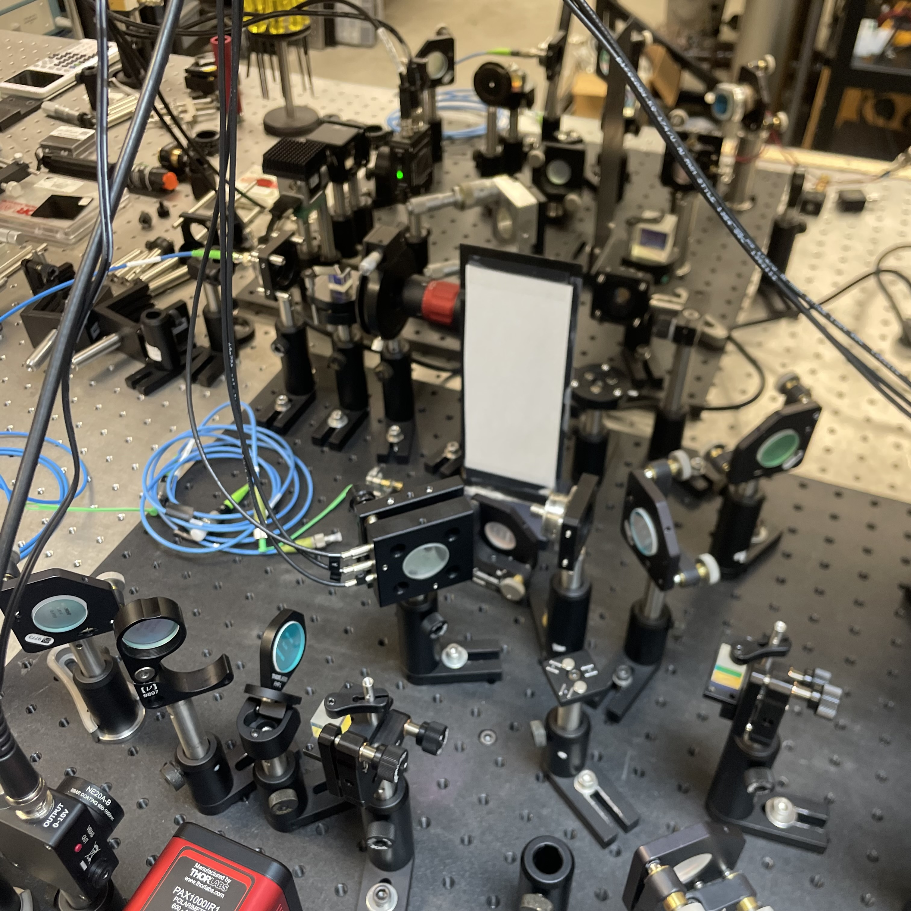
Currently, the experimental system is primarily structured around a hybrid Mach-Zehnder architecture, using piezoelectric mirrors and EOMs for FPGA-controlled phase modulation. By mapping individual actuator phases to angles on the Poincaré sphere, arbitrary polarization states can be generated and stabilized, with ongoing work focused on active stabilization.
My ongoing work involves modeling the optical elements for comparison between theoretical and experimental results, as well as building a high-speed, dual-EOM-based polarimeter for increased control bandwidth.
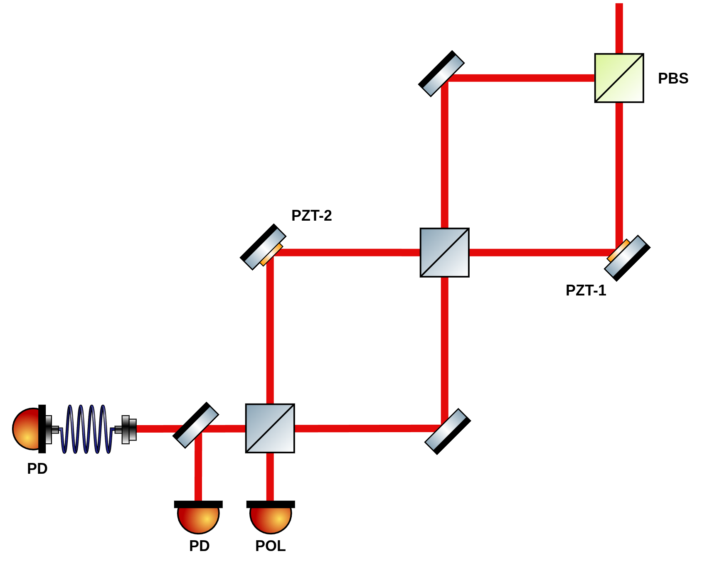
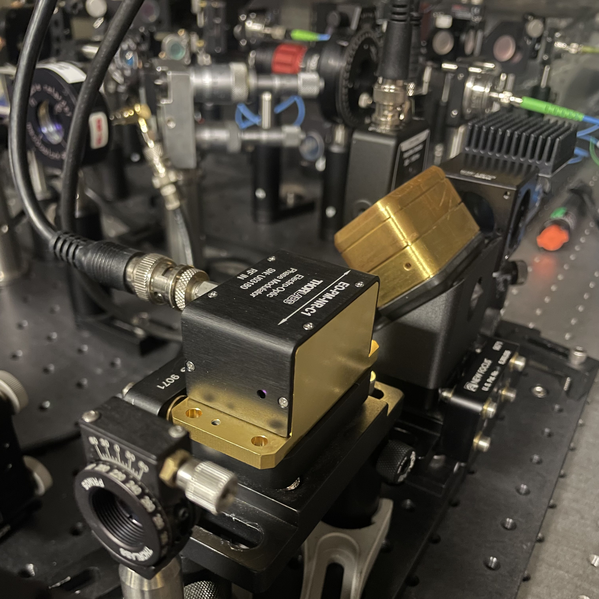
Independent Optics & Fabrication
Since my freshman year of high school, I have slowly been building my own optics lab. What started as a Michelson-Morley interferometer made of LEGOs has evolved into an amateur optics table with a mix of Thorlabs, Newport, and various custom 3D printed and CNC-machined parts.

For several years, I reached out to numerous optics companies inquiring about any damaged or returned parts, as well as finding retired startup labs willing to sell equipment for a fraction of its cost. I soon decided to learn how to make my own parts in order to build a rudimentary optics sandbox for learning alignment, fiber coupling, and basic interferometry.
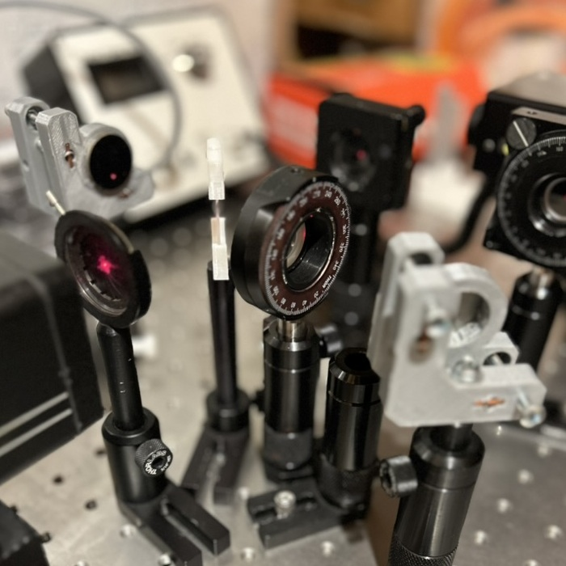
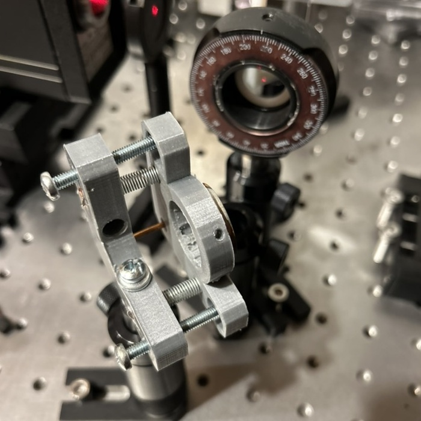
RemBRanDT (Remote Base-Range Data Transformer)
Originally referred to as my "Not-a-bomb" project (for visually obvious reasons), RemBRanDT takes a lot of inspiration from the cyberdeck community.
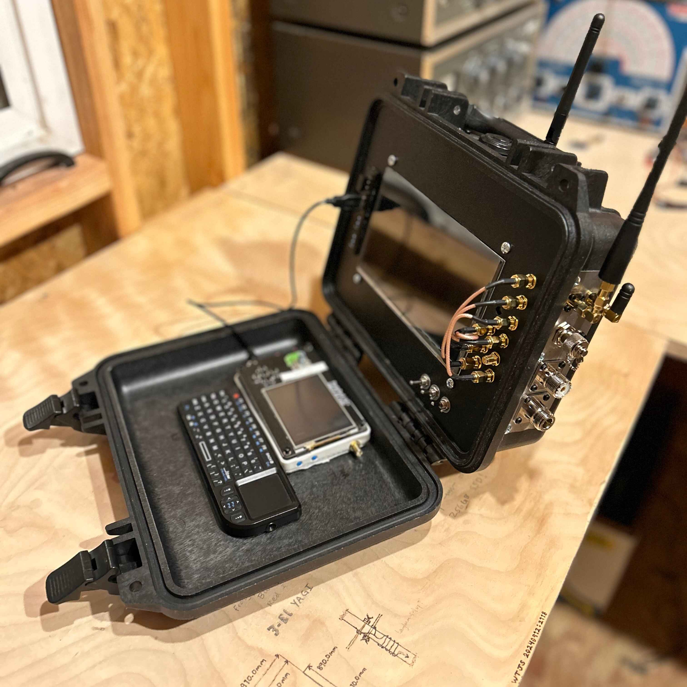
It's essentially a portable radio computer built into a Pelican 1200 case, with a HackRF, GPS, local networking, and a pile of offline data. The idea was to make something useful when internet or cell service isn't available: it can send and receive radio, host a small local network, and carry offline copies of things like Wikipedia, Project Gutenberg, and a handful of technical references.
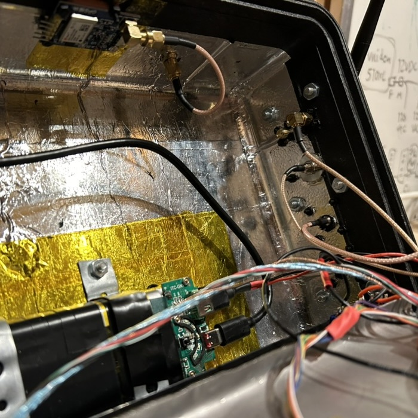
RemBRanDT is still very much a work in progress. I'd eventually like to replace the hand-cut acrylic with a proper front panel, add more battery capacity, finish the custom UI, and experiment with protocols like LoRa, APRS, JS8Call, and D-STAR.
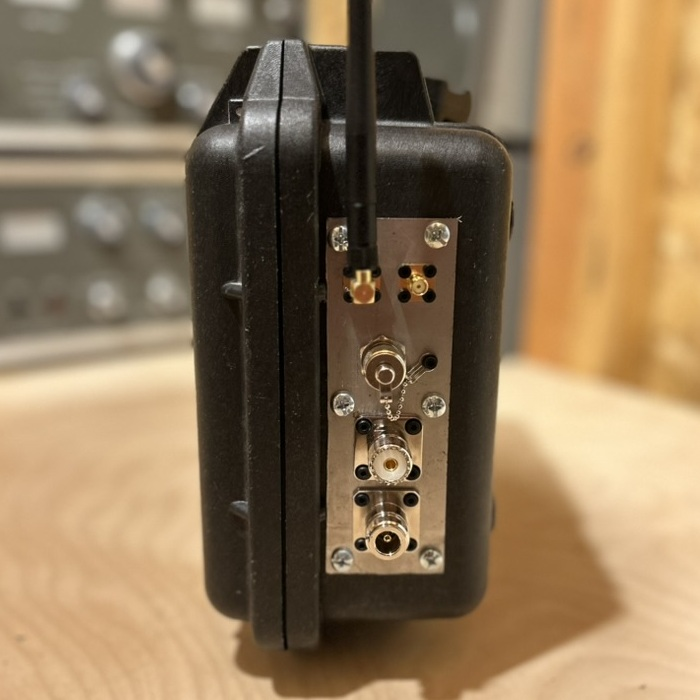
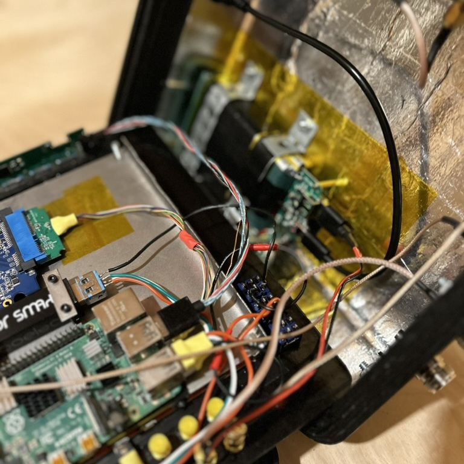
Parametrics and Chord Theory
While experimenting with jazz chords and studying signal processing, I became interested in the connection between musical harmony and frequency ratios. A couple of years ago, a friend introduced me to the world of modular synthesizers, which led me down the path of Modular Synth Rack software such as VCV Rack.
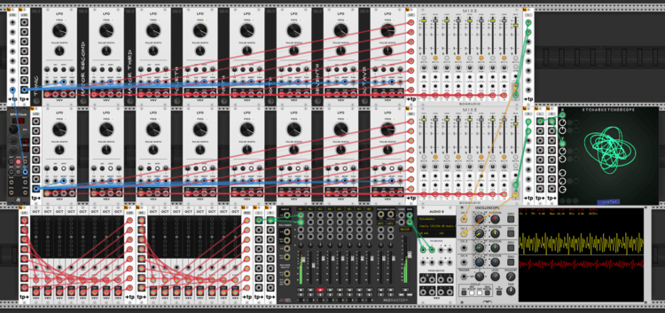
By generating pure tones with a digital synthesizer and plotting them parametrically on an oscilloscope, harmonic relationships become directly visible. Below, a just-intoned major seventh chord is constructed from the ratios \(1:5/4:3/2:15/8\). Perfectly tuned harmonic ratios produce a stationary parametric curve, while slight detuning causes the figure to oscillate, illuminating the delicacy of just intonation.


GPS in an Altoids Tin
With a hankering to make some kind of Altoids tin device and a need for a GPS, a scrappy little navigation tool became a fun use of a few spare parts.
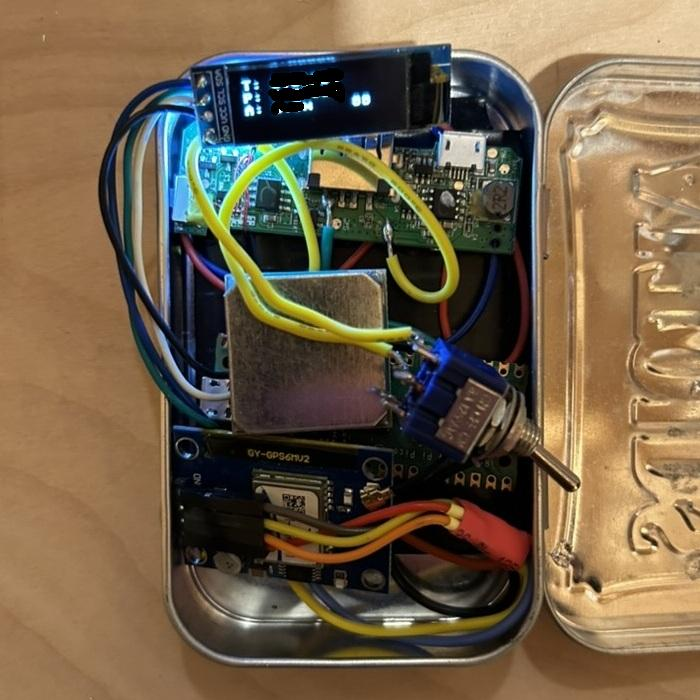
When it comes to navigation, a paper map combined with elevation, latitude, and longitude can decently compensate for the lack of a several-hundred-dollar GPS.
The trickiest part of this project was finding a way to get a reliable GPS fix while conserving battery. Initially, I used a very cheap 128x32 pixel screen, which limited me to three lines of text. Ultimately, thanks to the short fix time of the GPS module, the device can simply be left off until exact coordinates and elevation are needed. With sporadic use, this allows the 300mAh battery to last for a few days without any issues.